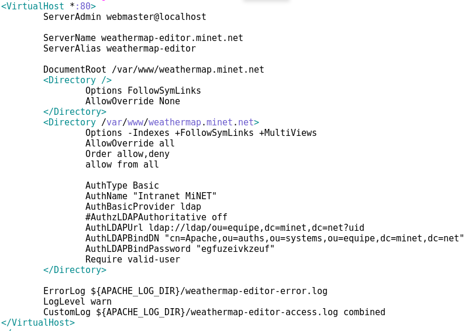
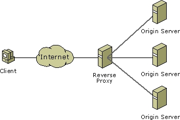

Web infrastructure
Speaker : Benoit Tellier
Retrieve this presentation online : https://rawgit.com/Open-Up/openup02_06/master/presentation/index.html
And on GitHub
Objectives
- Use apache web server
- Using MySQL
- Use NGinx as a reverse proxy
- Use SSL with NGinx
Apache
Apache
apt-get install apache2/etc/init.d/apache2 start / stop / reloadApache documentation
Configuration
/etc/apache2/apache2.conf
# /etc/apache2/
# |-- apache2.conf
# | `-- ports.conf
# |-- mods-enabled
# | |-- *.load
# | `-- *.conf
# |-- conf-enabled
# | `-- *.conf
# `-- sites-enabled
# `-- *.confMutex file:${APACHE_LOCK_DIR} default
PidFile ${APACHE_PID_FILE}
Timeout 300
KeepAlive On
MaxKeepAliveRequests 100
KeepAliveTimeout 5
User ${APACHE_RUN_USER}
Group ${APACHE_RUN_GROUP}
HostnameLookups Off
ErrorLog ${APACHE_LOG_DIR}/error.log
LogLevel warn
IncludeOptional mods-enabled/*.load
IncludeOptional mods-enabled/*.conf
Include ports.conf
AllowOverride None
Require all granted
Require all denied
LogFormat "%v:%p %h %l %u %t \"%r\" %>s %O \"%{Referer}i\" \"%{User-Agent}i\"" vhost_combined
LogFormat "%h %l %u %t \"%r\" %>s %O \"%{Referer}i\" \"%{User-Agent}i\"" combined
LogFormat "%h %l %u %t \"%r\" %>s %O" common
LogFormat "%{Referer}i -> %U" referer
LogFormat "%{User-agent}i" agent
IncludeOptional conf-enabled/*.conf
IncludeOptional sites-enabled/*.confapache2ctl
# apachectl configtest
Syntax OK# apachectl restart# apachectl gracefulAuthentication
AuthType Basic
AuthName "Authentification obligatoire"
AuthUserFile /path/access/passwd
Require valid-user$ htpasswd -c passwd identifier$ htpasswd passwd identifierIP ACL
Require valid-user
Order allow,deny
Allow from 198.51.100.0/24
Satisfy AnyVirtual host
Modules
root@openpaas-prod:btellier$ apt-cache search libapache2-mod
libapache2-mod-jk - Apache 2 connector for the Tomcat Java servlet engine
libapache2-mod-log-sql - Use SQL to store/write your Apache queries logs - Base
...
libapache2-mod-perl2 - Integration of perl with the Apache2 web server
...
libapache2-mod-python - Python-embedding module for Apache 2
...
libapache2-mod-php5 - server-side, HTML-embedded scripting language (Apache 2 module)
...NGinx
What is a reverse proxy ?
Why a reverse proxy ?
- Cache
- Compression
- SSL
- Load balancing
- Only one access point from the internet
NGinx

Web server and reverse proxy
Lightweight and performant
apt-get install nginx/etc/init.d/nginx start | stop | restartMain configuration in /etc/nginx/nginx.conf
Example of configuration
user www-data ;
worker_processes 2 ;
events
{
worker_connections 512 ;
}
http
{
sendfile on ;
include nginx.conf-server ;
include nginx.conf-relays ;
}Configuration as webserver
server
{
listen [::]:80 ;
server_name www.example.com ;
location /
{
root /usr/share/nginx/www ;
}
access_log /var/log/nginx/www.example.com-access.log ;
error_log /var/log/nginx/www.example.com-error.log ;
}Configuration as reverse proxy
server
{
listen [::]:80 ;
server_name www.example.org ;
location /
{
proxy_pass http://www.example.com ;
}
access_log /var/log/nginx/www.example.org-access.log ;
error_log /var/log/nginx/www.example.org-error.log ;
}NGinx command
# Control NGinx
nginx -s stop
nginx -s quit
nginx -s reload
nginx -s reopen
# Verify syntax
nginx -t
# Informations
nginx -v
nginx -VWhy would I bother ?
- Server authentication
- Encrypted data
- Data validation
Generate SSL key
$ openssl genrsa -des3 -out admin-serv.net.key 2048
Generating RSA private key, 2048 bit long modulus
...........+++
.....................................................................................+++
e is 65537 (0x10001)
Enter pass phrase for admin-serv.net.key:
Verifying - Enter pass phrase for admin-serv.net.key:Generate SSL certificate
$ openssl req -new -key admin-serv.net.key -out admin-serv.net.csr
Enter pass phrase for admin-serv.net.key:
...
Country Name (2 letter code) [AU]:FR
State or Province Name (full name) [Some-State]:Paris
Locality Name (eg, city) []:Paris
Organization Name (eg, company) [Internet Widgits Pty Ltd]:Tellier Benoit
Organizational Unit Name (eg, section) []:
Common Name (e.g. server FQDN or YOUR name) []:btellier.com
Email Address []:benwa@minet.net
Please enter the following 'extra' attributesDisable password on the key
$ openssl rsa -in admin-serv.net.key -out admin-serv.net.deprotected.key
Enter pass phrase for admin-serv.net.key:
writing RSA keyGet a certification
$ cat admin-serv.crt rapidssl.ca.crt > certificate.admin-serv.net.crtSelf signature
$ openssl x509 -req -days 365 -in admin-serv.net.csr -signkey admin-serv.net.key -out admin-serv.net.csr
Signature ok
subject=/C=FR/ST=Paris/L=Paris/O=Tellier Benoit/CN=btellier.com/emailAddress=benwa@minet.net
Getting Private key
Enter pass phrase for admin-serv.net.key:Use these certificate with NGinx
$ nano /etc/nginx/sites-enabled/any
server {
listen 443;
server_name admin-serv.net;
ssl on;
ssl_certificate /etc/nginx/ssl/certificate.admin-serv.net.crt;
ssl_certificate_key /etc/nginx/ssl/admin-serv.net.deprotected.key;
location / {
root /var/www/;
index index.html;
}
}